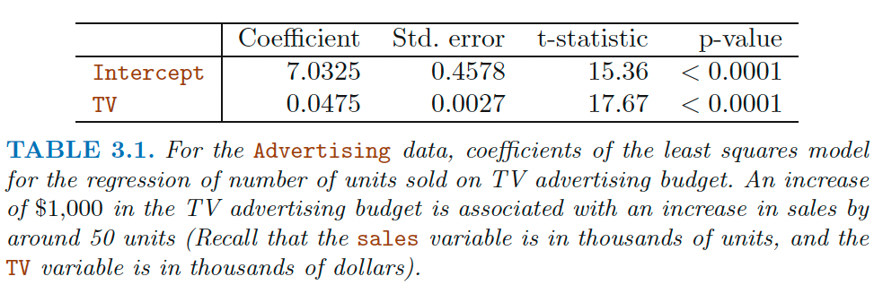
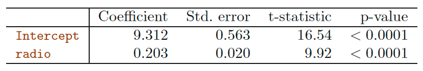
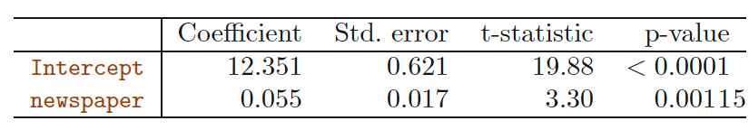
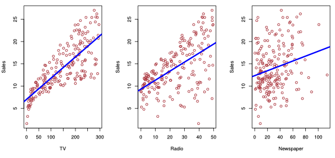
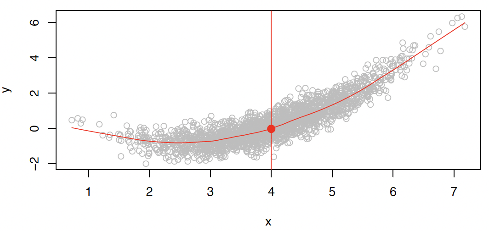
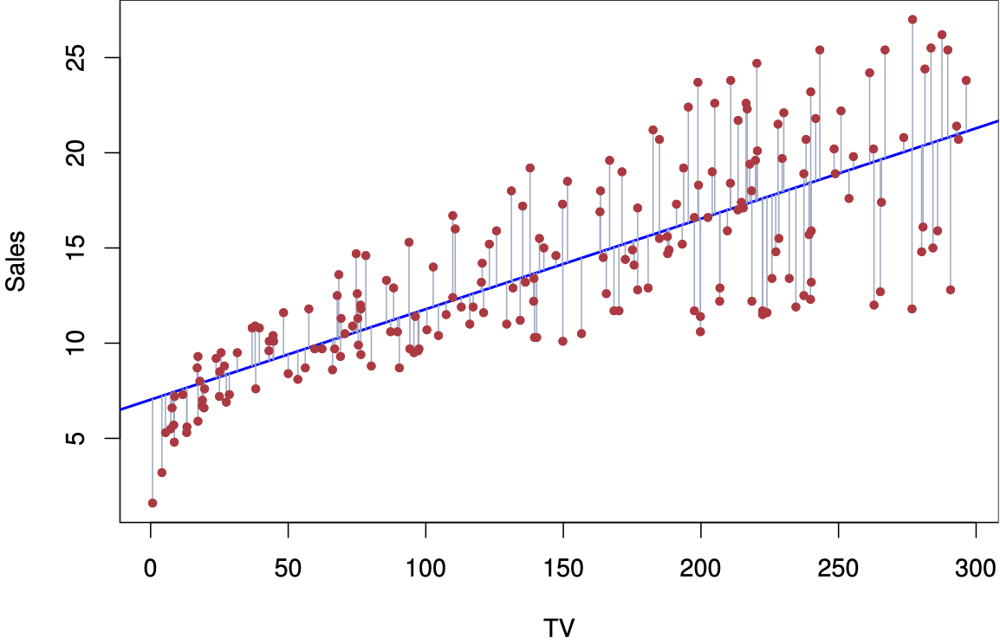
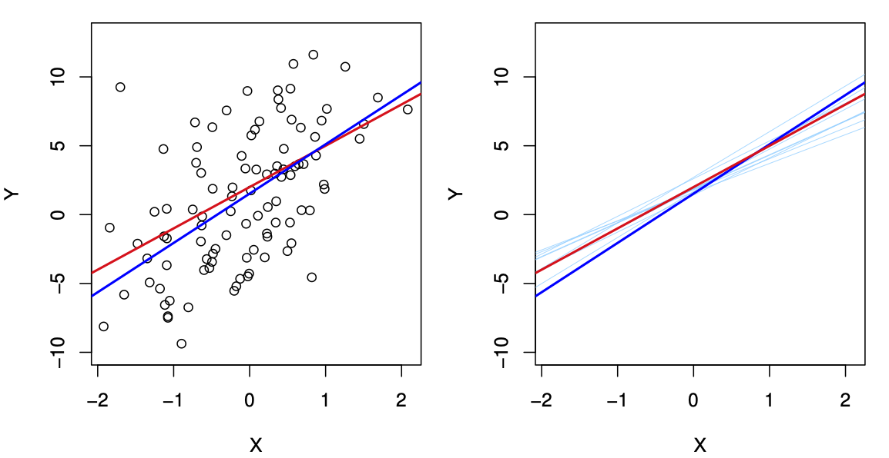
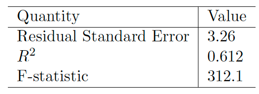

Chapter 3 of the textbook Gareth James, Daniela Witten, Trevor Hastie and Robert Tibshirani, An Introduction to Statistical Learning: with Applications in R.
Chapter 11 of the textbook Chantal D. Larose and Daniel T. Larose Data Science Using Python and R.
Part of this lecture notes are extracted from Prof. Sonja Petrovic ITMD/ITMS 514 lecture notes.
R and Python command to run a simple linear regression model
Sales plottedagainst TV,Radio and Newspaper advertising budgets.Our goal is to develop an accurate model (\(f\)) that can be used to predict sales on the basis of the three media budgets: \[
Sales \approx f(TV, Radio, Newspaper).
\]
Sales = a response, target, or output.
TV is one of the features, or inputs.
Similarly for Radio and Newspaper.
We can put all the predictors into a single input vector \[ X = (X_1,X_2,X_3)\]
Now we can write our model as \[ Y=f(X) +\epsilon,\] where \(\epsilon\) captures measurement errors and other discrepancies between the response \(Y\) and the model \(f\).
Formally, the regression function is given by \(E(Y | X = x)\). This is the expected value of \(Y\) at \(X = x\).
The ideal or optimal predictor of \(Y\) based on \(X\) is thus \[ f(x) = E(Y | X = x)\]

Predict a quantitative \(Y\) by single predictor variable \(X\) \[ Y \approx \beta_0+\beta_1 X.\]
Example: \(sales \approx \beta_0+\beta_1\times TV\).
\(\beta_0\), \(\beta_1\) are two unknown constants that represent the intercept and slope. [parameters, or coefficients.]
Prediction \[ \hat y = \hat\beta_0+\hat\beta_1x.\]
Let \(\hat{y}_i = \hat{\beta}_0+\hat{\beta}_1x_i\) be the prediction for \(Y\) based on the \(i\)th value of \(X\).
\(e_i = y_i-\hat{y}_i\) represents the \(i\)th residual.
Residual Sum of Squares (RSS) \[\text{RSS} = \sum_{i=1}^n e_i^2 = \sum_{i=1}^n(y_i-\hat{y}_i)^2. \]
The least squares approach chooses \(\beta_0\) and \(\beta_1\) to minimize RSS.

Advertising data, the least squares fit for the regression of sales onto TV is shown. The fit is found by minimizing the sum of squared errors. Each grey line segment represents an error, and the fit makes a compro- mise by averaging their squares. In this case a linear fit captures the essence of the relationship, although it is somewhat deficient in the left of the plot.



Here \(t= \frac{\hat{\beta}_i-0}{SE(\hat{\beta}_i)}\) is a \(t\) statistic.
Question: Is there a relationship between the response \(Y\) and predictor \(X\)?
We can do a hypothesis testing.
check whether \(\beta_1=0\)
\(p\)-value
the probability of observing any value equal to t or larger; as usual! - the probability of seeing the data we saw under the \(H_0\)
in practice, we just read off the \(t\)-test or read off the output of linear models.
Question: Suppose we have rejected the null hypothesis in favor of the alternative. Now what??
Natural: quantify the extent to which the model fits the data.
The quality of a linear regression fit is typically assessed using two related quantities:
the residual standard error (RSE) and
the \(R^2\) statistic.

A measure of the lack of fit of the model simple linear regression model to the data: \[ RSE = \sqrt{\frac{1}{n-2}RSS} = \sqrt{\frac{1}{n-2}\sum_{i=1}^n (y_i-\hat{y}_i)^2}\]
If the predictions obtained using the model are very close to the true outcome values (\(\hat{y}_i\approx y_i\) for i = 1, . . . , n), then RSE will be small
If \(\hat y_i\) is very far from \(y_i\) for one or more observations, then the RSE may be quite large
Interpretation: The RSE provides an absolute measure of lack of fit. But since it is measured in the units of \(Y\) , it is not always clear what constitutes a good RSE…
The \(R^2\) statistic provides an alternative measure of fit (proportion):
\[ R^2 = \frac{TSS-RSS}{TSS}=1 - \frac{RSS}{TSS}\]
\(R^2\) measures the proportion of variability in \(Y\) that can be explained using \(X\)
Interpretation Always between 0 and 1 (independent of scale of \(Y\)).
Question What’s a good value?
Can be challenging to determine … in general, depends on the application.
Use simple linear regression on the Auto data set.
lm() function to perform a simple linear regression with mpg as the response and horsepower as the predictor.Where is the output??
fitlm object.Use the summary() function to print the results.
Call:
lm(formula = mpg ~ horsepower, data = Auto)
Residuals:
Min 1Q Median 3Q Max
-13.5710 -3.2592 -0.3435 2.7630 16.9240
Coefficients:
Estimate Std. Error t value Pr(>|t|)
(Intercept) 39.935861 0.717499 55.66 <2e-16 ***
horsepower -0.157845 0.006446 -24.49 <2e-16 ***
---
Signif. codes: 0 '***' 0.001 '**' 0.01 '*' 0.05 '.' 0.1 ' ' 1
Residual standard error: 4.906 on 390 degrees of freedom
Multiple R-squared: 0.6059, Adjusted R-squared: 0.6049
F-statistic: 599.7 on 1 and 390 DF, p-value: < 2.2e-16Is there a relationship between the predictor and the response?
How strong is the relationship between the predictor and the response?
Is the relationship between the predictor and the response positive or negative?
What is the predicted mpg associated with a horsepower of \(98\)? What are the associated 95% confidence and prediction intervals?
First you have to make a new data frame object which will contain the new point:
1
24.46708 fit lwr upr
1 24.46708 23.97308 24.96108 fit lwr upr
1 24.46708 14.8094 34.12476What is the difference between confidence and prediction intervals!? \(\rightarrow\) we will learn in the future lecture!
Plot the response and the predictor. Use the abline() function to display the least squares regression line.
Use the plot() function to produce diagnostic plots of the least squares regression fit. Comment on any problems you see with the fit.
Construct a simple linear regression of mpg with cylinders, displacement, and acceleration respectively. Based on the output, answer the following questions:
Is there a relationship between the predictor and the response?
How strong is the relationship between the predictor and the response?
Is the relationship between the predictor and the response positive or negative?
Based on the RSE and \(R^2\), which model will you choose for the simple linear regression? Explain it.